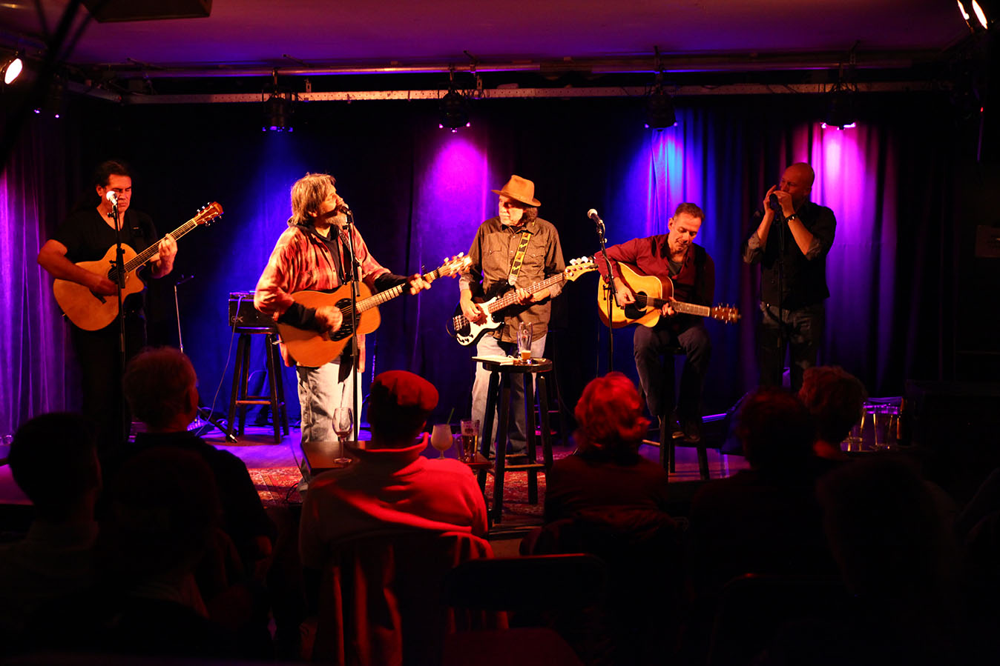

In memoriam
Musicians and friends pay tribute to the late Tom Skinner

Tom Skinner in December 2013 iat The Ramble on Tuesday in Nijmegen, The Netherlands
Gijs Jacobs
[Editor’s note: Beloved Tulsa musician Tom Skinner passed away on July 12. Throughout his long career, he supported, encouraged and influenced countless Oklahoma artists. Below are the thoughts of just a few of the musicians and friends whose lives Skinner touched.]
Tom Skinner was one of the greatest Oklahoma songwriters—a multi-instrumentalist, genius comedian and storyteller, friend to all, and a cornerstone of the less commercialized version of what was to be known as “Red Dirt.” He was also such a humble man that he refused to own up to any of those things.
Tom never left the period of paying his dues, and it never seemed that he felt like he was paying dues.
His inclusive shows nurtured the talent of many through the years, including a young Garth Brooks when Tom was living and playing in Stillwater. They would eventually move to Nashville, and while Garth would take another path, Tom, like many of the best artists, would decide that the big music machine was not for him. He sang every song so passionately that Nashville could never turn him into a bland hit-maker. He would return to his roots, in Oklahoma.
Regardless of what genre of music you made, Tom had a childlike interest in it and would support you by sharing the stage at the countless shows he would play over the years, right up to the end. His love, generosity, and his rebellion left a deep mark on all who knew him. The best way to keep a songwriter’s spirit alive is through playing their songs, and Tom was loved by so many that his spirit will be with us for some time.
—Paul Benjaman, Paul Benjaman Band
I met Tom Skinner when I was a junior in college at OSU. I think the songs that Tom wrote touched my heart so much not just because of the way they were written, but because of the way he delivered them. From his heart and soul. And maybe even more do I appreciate Tom in my life because he encouraged me, as he has hundreds of musicians all across the state and everywhere he goes—so that could be across the country and the world.
Another thing about Tom Skinner is the way he could hear a great song in somebody and make it his own. Then—the best part—he would deliver that song to the hungry ears of us songwriters and artists needing something new to be inspired by so we could carry on our craft. Love you Tom.
—Monica Taylor, singer/songwriter, The Cherokee Maidens, The Red Dirt Ramblers
I always admired how gracious Tom was to me and many other local musicians. He played a huge role in showing me how much bigger music could be when you have a community around it. I connected a great deal to his music and shared a kindred love for Gram Parsons. He was one of the first to invite me onto the stage when I was starting out. I remember how honored I felt any time I was asked to sit in with Tom’s Science Project. That whole band is so good and really filled out my songs.
Harmonizing with Tom was something magical. He always encouraged me and often advised me to get out of town. Every time he saw me, he jokingly said, “What the hell are you still doing here? I told you to get out!” I feel lucky to have known him.
—Jesse Aycock, singer/songwriter, Paul Benjaman Band, Hardworking Americans
I’ve known Tom about 15 years. He was my best friend and duet partner for about 10 years. He was special because he was a great singer, for one thing—a really great interpreter of songs. Like our friend Larry Spears used to joke, “Tom makes every song his own.” (Tom did several of Larry’s songs better than Larry could, and Larry knew it, so no offense to Larry.)
What made him special as a person, too, is he was very funny. And as a songwriter—well, “Skyline Radio” might be one of my very favorite songs. Gritty, honest, soulful, smart, melodic, country folk rock, with social and political commentary.
Once, we’re driving, and Tom breaks into song: “Good morning starshine, the earth says hello, you twinkle above us, we twinkle below!” I cannot believe Tom knows the words, not only to the entire first verse, but also some of the words to the chorus. He actually Googles the lyrics on his phone to mock it some more, and he reads it out loud like a secretary might read the minutes of a boring meeting:
“‘Gliddy glub gloopy nibby nabby noopy la la la lo lo … early morning singing song.’ That’s just someone giving up completely on songwriting!”
—Susan Herndon, singer/songwriter
I became pals with Tom about 20 years ago. The first night was the most memorable. We hung around his pool trading John Hiatt songs for a while to see who knew the most. He won, of course. Irreplaceable, that man, in so many ways.
—Steve Pryor, Steve Pryor Band

I played drums for Tom a couple months, and I was lucky enough to be his drummer the night he was inducted into the Oklahoma Music Hall of Fame. He got a hilarious haircut that day, a straight-up bowl cut, and didn’t give a damn, even though he was going to be on TV playing with a bunch of other legends. During those months he would just kindly say “Thank you for playing” at the end of the night and “Hello” at the beginning of the night. A man of few words, but every one of them sincere. He came from that pre-information age where authenticity wasn’t so hard to come by. He’ll be missed.
—Dylan Aycock, musician and label owner, Scissor Tail Editions
Several members of Tom’s original band have passed away. The one thing that hasn’t ever changed was the fans. They, including me, have followed them wherever they played, for almost 20 years. We eat, drink, sing and enjoy what Tom started so long ago. That’s why we call it church. We all feel like Tom’s family.
We are keeping Tom’s Science Project going in his honor. Each week for three hours, we honor him and music that he lived and loved. Young musicians are given a chance to play with “the band.” Sometimes we have a special guest, sometimes it’s just any local musician that’s off that night. This is what Tom loved.
—Becky Gragg, friend and longtime fan
I played with Tom a handful of times, the last was his request. He commented on one of my posts, “Come sit in at Science Project before I die.” I went that night and played the entire set with him. He was so gracious and complimented me on my work both as a player and a builder. At the end of that night, I asked him to sign my guitar. He was genuinely surprised at me asking. That was just eight weeks before his passing.
My Tele is very dear to me. I built it with my hands, and I’ve been beating on it for 10 years. There is only one signature on it, and it’s Tom Skinner’s. Though I didn’t get to spend much time with him, he treated me like an old friend. He is and will always be an Oklahoma legend. Not just as a player, but as one of the good ones.
—Seth Lee Jones, luthier and guitarist, Seth Lee Jones Guitars, Jacob Tovar and the Saddle Tramps
What do I say about Tiny Tom Skinner? Well, “Thank you” is what first comes to mind. He is one of the main reasons we’ve had such a great music scene for so many years. I’ve been hanging around this Oklahoma scene since the late ’80s-early ’90s. It was a few years before I actually met Tom, around 1991—The (Red Dirt) Rangers were playing, and I was cutting a rug as usual. Afterwards, Tom said, “Look at what you did there, little lady.” I was just a pipsqueak kid and was kind of nervous to ask, “What did I do?” And he said, “You got everyone up and dancin’ right along with ya, that’s how you do it, little one, that’s how you do it.”
Tom has always given us ample tunes to dance to. Here I am this many years later, still reeling from Science Project last week. So again, for all those dances, thank you Tom Skinner.
—Sky Lyons, friend and longtime fan
I first saw Tom Skinner play with Don Morris at the River’s Edge Cafe when I was 19. I remember thinking, “Who are these guys? I’ve never heard anything like this before!” I came to know that Red Dirt is “more of a community than a genre,” as Tom said. Sitting in at the Science Project gave me the confidence and encouragement to keep at it. Tom always made you feel like you were somebody, and that your music mattered to the world. He gave his heart and his music freely, which was a great inspiration to me.
—Erin O’Dowd, singer/songwriter
Tom Skinner was the best damn songwriter you never heard of unless you happen to be from Oklahoma. He was his harshest critic, finding something wrong with almost every record he ever did, except I remember him telling me he liked the last one he recorded with Mike McClure. Tom had more songs in his head than anyone I know.
The other thing that stood out to me about Tom was his stubbornness, and I’m sure it hurt him at times in some ways. But mostly, it made him fiercely loyal to friends and uncompromising when it came to the integrity of a good song. These qualities made him an artist all other artists looked up to. He had a gift for bringing artists together and for mentoring young artists.
The last conversation I had with Tom, I was encouraging him to read some things by Anne Lamott, a Christian writer I admired. I told him about a line she wrote where she said, “We are all just walking each other home.” He replied, “That’s a great line, we ought to write a song.” I said, “Yes we should.” Tom is now home.
—Scott Aycock, singer/songwriter and poet, public radio tulsa’s Folk Salad
.jpg)
.jpg)